Règlement des armes
-silencieux interdis sauf pour le SWAT avec la carabine spéciale MKII
-seulement les force de l’ordre ont accès aux armes MKII
-l’utilisation d’arme non autoriser pour votre rôle entrainera un warn direct sans avertissement
-Les armes qui ne sont pas catégoriser sont toute INTERDIS
-pour les fusil sniper lourd et de précision sont seulement autoriser dans les ANIBULATOR STEATL et aucun autre (fusil de précision a verrou)
-aucune arme civil et cartel/mafia peut avoir d’amélioration
-seulement les force de l’ordre peuvent avoir des arme avec amélioration
-
Tout le monde
 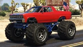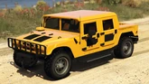
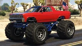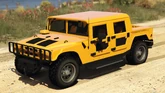 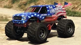
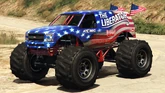
Civil
 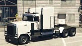
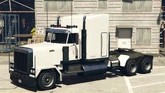 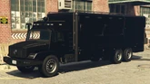
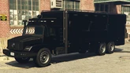
Cartel/Mafia


 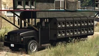
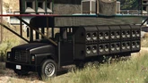
Policier


 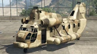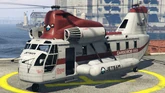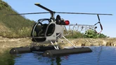
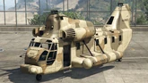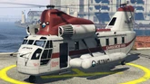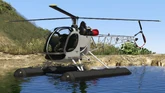 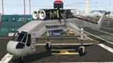
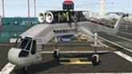 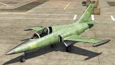
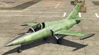
SWAT
 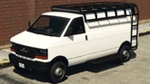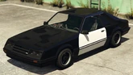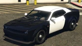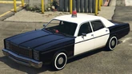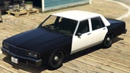
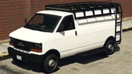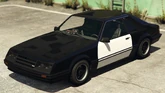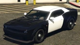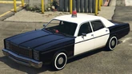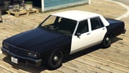
Pompier
Ambulancier
OFFICIER et rang supérieur
-toute les même arme que la Police et le SWAT